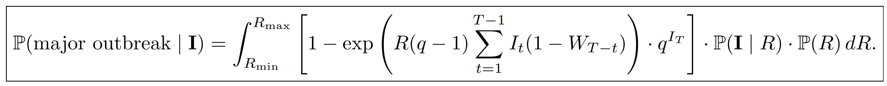

Epidemiological models
The underlying probability calculation methods is a discrete-time renewal process, a standard epidemic model for infectious disease dynamics that allows us to model new cases over time.
The expected number of new cases at a time is given by:

The basis of the equation
The equation is based on the premis of the following generalisations:
- The average number of secondary cases per case,
R - Averaging plausible values of R, weighted by how well each value explains the observed data.
- Conditional probility based on the
branching process theorydescribing the probability that the observed early cases give rise to a major outbreak under a set value ofR - No major outbreak is identified based on the probability of
notgenerating offspring after week 3 - Major outbreaks are defined as those that do not go extinct and
continueto generate cases after week 3 - How strongly those past cases contribute to new cases today, determined by the serial interval weights,
Ws
As is common in the literature, any new cases are generated by drawing from a poisson distribution with this expected value.
We model transmission using a weekly discretised serial interval distribution w=(w1, w2, ...).
to construct these weights ,we begin with a continuous gamma distribution for the serial interval with mean 15.3 days and a standard deviation 9.3 days, consistent with estimates from the 2014-2016 West Africa Ebola epidemic
This can be visualised in the following equation:

Having defined the underlying epidemiological model, we can investigate the key question: given early incidence data such as the first three weeks of case counts {I1, I2, I3}, what is the probability that a large outbreak will follow?
Estimation approaches
There are 3 main approaches which could be utilised to etimate the probability of a major outbreak (PMO)
- Analytic solution- an analytic calculation based on branching process theory
- Trajectory matching- a trajectory matching approach using simulated outbreaks;
- Simulation- a machine learning classifier trained on large numbers of simulated outbreaks.
The analytic solution is the most efficient and is the method used in the PMO calculator.
To estimate the probability of a major outbreak analytically, a Bayesian approach that incorporates uncertainty in the reproduction number R. Specifically, given observed case counts from the first three weeks, {I1, I2, I3}, we compute the probability that a large outbreak follows by averaging over all plausible values of R, weighted by how well each value explains the observed data. This leads to the following expression:

The posterior distribution captures the likelihood of different values of R given the early epidemic trajectory. The condition probability is informed by branching process theory and described the probability that the observed early cases gives rise to a major outbreak under fixed value of R. The overall outbreak probability is then obtained by integrating over the posterior distribution of R.
A step by step derivation of the analytical method consists of:
- Deriving the posterio distribution utilising Bayes rule
- Utillisin M as a normalising constant where we assume the number of cases in week 1 (I1) is unknown
- Noting that for no outbreak to occur that the I1+I2+I3 cases arising in the first three weeks don't generate cases which initiate a major outbreak after week 3
- The total number of offspring generated by a single case is drawn from poisson distribution with
mean R - Offspirng generated after week three by a single case in wek 1 is drawn from a poisson distribution
R(1 − w1 − w2)
Based on the previously assumed generalisations the general formula is:
